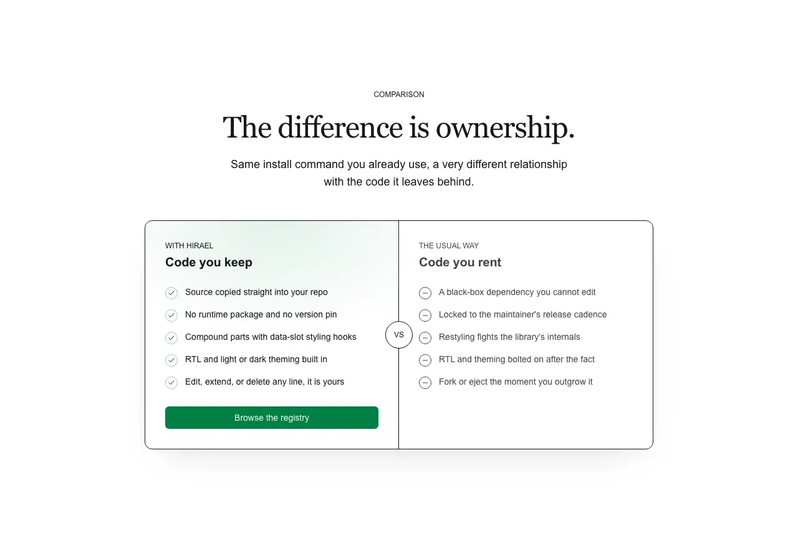

Rendered on the shadcn default neutral palette with harness-generated props.
pnpm dlx shadcn@4.21.0 add @hirael/comparison-01
| licence | ASSET |
|---|---|
| primitive base | none |
| type | registry:block |
| files | src/components/blocks/comparison-01.tsx |
| npm deps pulled | nuqs |
| registry deps | button |
| semantic / palette / hex | 20 / 0 / 0 |
| writes shared ui/ | no |